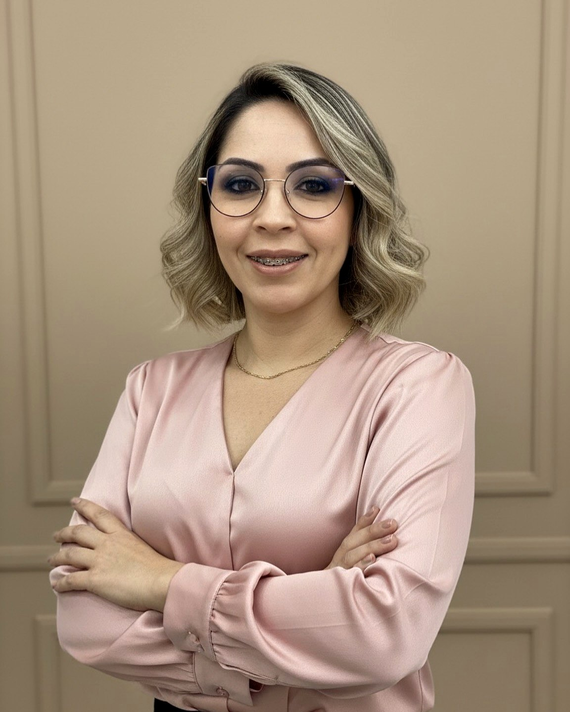
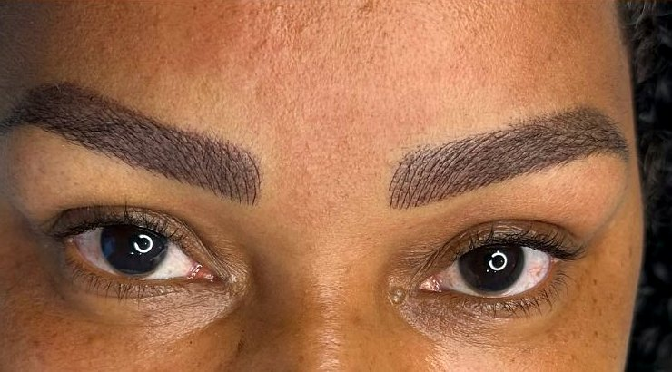
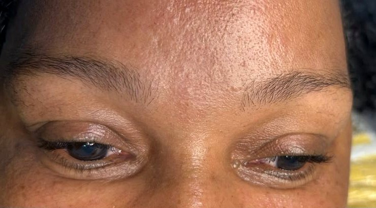

Iuany Horácio
Cílios · Lash designer
Especialista em olhar elegante e natural. Faz extensão de cílios com LED UV, lash lifting e o efeito fox eyes, sempre cuidando da retenção para os fios durarem.
Studio de beleza em Macaé · Parque Aeroporto
O studio de Socorro Horácio reúne cinco especialistas no mesmo endereço: sobrancelhas, lábios, cílios, unhas e cabelo, com atendimento com hora marcada.

A especialista
Socorro é a fundadora do studio e foi pioneira em Design Estratégico em Macaé. Antes de qualquer pigmento, ela estuda o formato do rosto, a expressão e o que você quer valorizar. Só então desenha a sobrancelha que combina com você.
É também especialista em reconstrução de sobrancelhas, para quem tem falhas, fios ralos ou quer corrigir um trabalho antigo. Além das sobrancelhas, faz micropigmentação labial, Hidra Gloss Lips e cílios.
Cada sobrancelha que eu faço carrega um pouquinho do meu amor pelo que faço. Não é só sobre beleza: é sobre autoestima, confiança e cuidado em cada detalhe.Socorro Horácio


Transformações
Técnica híbrida feita por Socorro Horácio: fio a fio com sombreamento para preencher as falhas, com aspecto natural.
Menu de serviços
Escolha um serviço para agendar. A mensagem chega no WhatsApp da profissional com o nome do procedimento, e ela responde com horários e valores.
Como funciona
As profissionais do studio
Conheça quem atende no studio, veja um pouco do trabalho de cada uma e chame direto quem você quiser.
Cílios · Lash designer
Especialista em olhar elegante e natural. Faz extensão de cílios com LED UV, lash lifting e o efeito fox eyes, sempre cuidando da retenção para os fios durarem.
Cabelo · Hair specialist
Cabeleireira especialista em alisamento e restauração capilar. Trabalha com progressiva sem formol, botox, morena iluminada, loiros e ruivos, sempre começando pelo diagnóstico do fio.
Unhas · Nail designer
Especialista em gel na tips. Para ela, uma unha bonita é também uma dose de autoestima. Faz alongamento, banho de gel e unhas postiças.
Unhas · Manicure
Cuida das unhas das clientes do studio, com atendimento com hora marcada no Parque Aeroporto.
O espaço
Ambiente acolhedor no Parque Aeroporto, com um cantinho para cada cuidado: sobrancelhas, lábios, cílios, unhas e cabelo no mesmo lugar.
Portfólio
Clientes reais de Macaé e região. Toque em uma foto para ampliar.
Depoimentos
Sinceramente... vou te falar: amei sua unha. Está perfeita. Recebi muitos elogios. E me perguntaram quem era. Já falei seu nome. Q Deus abençoe sempre seu trabalho. Vc faz bem e faz com carinho. Obrigada tá 🥰
Obrigada pelo carinho e atenção de toda equipe! ❤️
Só queria dar uma iluminada… Obrigada por entender exatamente o que queria, você arrasou demais 🫶🏻
Além da cutilagem, eu sempre vejo os detalhes da pintura, os cantinhos bem limpinhos e a pontinha perfeita ❤️
Cuide logo venha arrumar minhas sobrancelhas 😍😍
esse olhar 👏😍
Gostei muito do seu serviço! Um ótimo atendimento, e as unhas ficaram lindas 💖
Linda arrasou que Deus te abençoe ❤️
Eu A M E I 😍😍😍
Mensagens e comentários reais, copiados do WhatsApp e do Instagram das profissionais.
Diagnóstico de beleza
Responda cinco perguntas rápidas. No final você recebe o procedimento indicado, dicas de preparo e uma sugestão que combina, e a conversa abre no WhatsApp da profissional certa com a mensagem pronta.
Dúvidas
Escolha a profissional e toque no botão de agendar. A conversa abre no WhatsApp dela com a mensagem pronta. O atendimento é com hora marcada.
O valor depende do procedimento e da avaliação. Mande uma mensagem com o serviço que você quer e a profissional responde com valores e horários.
Não. O pigmento clareia aos poucos e a duração varia de pele para pele. Na avaliação, Socorro explica quando fazer a manutenção.
No microblading os fios são desenhados um a um, com efeito bem natural. A micropigmentação preenche a sobrancelha e dá um aspecto mais marcado. Socorro indica a técnica certa para o seu rosto e a sua pele.
Socorro é especialista em reconstrução de sobrancelhas. Mande uma foto pelo WhatsApp para ela avaliar o seu caso.
Como todas atendem no mesmo studio, dá para tentar horários seguidos. Combine com cada profissional pelo WhatsApp.
Onde estamos
Escolha a profissional e fale direto com ela pelo WhatsApp.